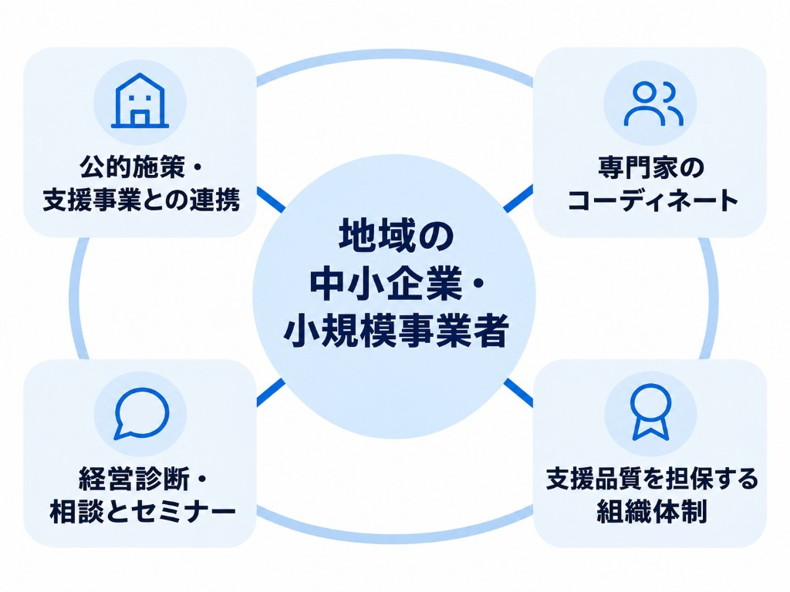
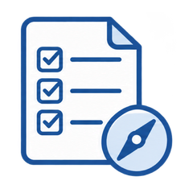

全国生活衛生関係営業者向け経営支援事業（専門家派遣事業）
全国生活衛生同業組合に加入している事業者に対し、中小企業診断士が伴走型で支援します。物価高騰などで生じた経営課題の解決・改善を目的とした事業です。
- 対象
- 生活衛生関係営業のうち16業種（すし、めん類、理容、美容、ホテル・旅館、クリーニングなど）の事業者
- お申し込み
- チラシをご確認のうえ、（公財）全国生活衛生営業指導センターへご連絡ください。
当協会は、県内の行政機関や支援機関の皆様と緊密に連携し、

地域の支援ネットワークの一翼を担い、行政・支援機関の皆様の施策を実務面からサポートします。
支援機関の皆様が実施する専門家派遣事業等において、当協会が窓口となり、公正かつ円滑な制度運用に貢献します。
専門家集団として、地域の事業者様に直接、経営課題解決の場を提供します。
支援機関の皆様に安心してお任せいただけるよう、会員の支援スキル向上と組織力強化を図っています。
経営、財務、人事、マーケティング、ITなど、専門分野の異なる中小企業診断士が、中立的な立場から御社の課題解決をご支援します。
経営状況をデータに基づいて客観的に分析し、中立的な立場で改善策をご提案します。
このテーマで相談する事業承継に関わる各種専門家と連携しながら、円滑な承継の実現をサポートします。
このテーマで相談する御社に合った補助金・助成金を見つけ、事業計画の策定から申請までを支援します。
このテーマで相談するツールの導入にとどまらず、業務改革まで見据えて、導入後の運用・改善も支援します。
このテーマで相談する支援機関の専門家派遣事業等で、課題に合った専門分野の診断士を選定・ご紹介します。
このテーマで相談する経営力向上に役立つセミナーや研修会の開催、講師のご紹介を行っています。
このテーマで相談する経済産業大臣が登録する中小企業診断士の団体として、特定の商品やサービスに偏らない立場でご支援します。
県や市町村、金融機関、商工団体等とのネットワークから、御社に合った支援制度をご案内します。
 03
03
研修会や研究会で専門性を磨き、複雑な課題にも会員間のネットワークで組織的に対応します。
ご相談の窓口はお問い合わせフォームです。県内の支援機関ネットワークを生かし、御社に合った制度をご案内したうえで経営相談に進みます。
お悩みや課題の概要をお問い合わせフォームからお送りください。
内容を確認のうえ、当協会から折り返しご連絡し、詳しい状況をうかがいます。

支援機関ネットワークの中から、御社の課題に合った支援制度をご案内します。
課題に合った専門分野の中小企業診断士が、経営相談・支援を行います。
全国生活衛生同業組合に加入している事業者に対し、中小企業診断士が伴走型で支援します。物価高騰などで生じた経営課題の解決・改善を目的とした事業です。
経験豊富な中小企業診断士が御社のジギョケイを確認し、実施状況を踏まえて、具体的で無理のない実効性向上のためのアドバイスを行います。
経営、財務、人事、マーケティング、ITなど幅広い分野に対応しています。事業承継、補助金・融資、IT導入・DXのご相談も承ります。
はい。専門家派遣事業等で当協会が窓口となり、課題に合った中小企業診断士を選定・ご紹介し、業務の進行管理も行います。
まずはお問い合わせフォームからご連絡ください。当協会の会員から協会についてご説明し、入会申込書のご提出と理事会の承認を経て入会となります。手続きと会費は入会案内をご覧ください。
経営のご相談、支援機関からのご依頼、入会に関するご質問など、お問い合わせフォームからお気軽にご連絡ください。内容を確認のうえ、協会からご連絡します。